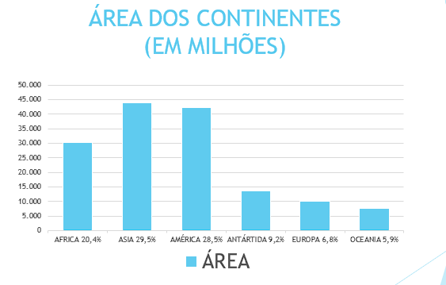

O Continente Americano é uma porção de terras banhadas pelo Oceano Atlântico a leste e pelo Oceano Pacífico a oeste. Trata-se de dois blocos continentais ao norte e ao sul unidos por um istmo (pequena faixa de terras situadas entre dois mares).
Com uma população de quase 1 bilhão de habitantes, o continente americano é o terceiro mais habitado, depois da Ásia e da África. Em virtude do processo de colonização de seus territórios, há uma grande variedade étnica, envolvendo os inúmeros povos nativos que habitavam em tempos pré-colombianos, grupos identitários europeus e as várias etnias africanas, advindas por meio do processo de escravidão colonial.
Devido ele ter e uma área territorial de 42.549.00 km², a América é o segundo maior continente (atrás apenas da Ásia) e conta com 14,2% da população mundial. Ao todo, são 35 países independentes e 16 colônias.
Eventualmente, ele costuma ser chamado de “Américas” quando tratada em seu todo pois é um continente localizado nos hemisférios norte, sul e ocidental, situando-se entre os oceanos Pacífico e Antártico, esse continente também é chamado de “Novo Mundo”, mas isso não significa que ele seja mais novo realmente que os demais continentes, pois essa denominação foi criada após o descobrimento pelos europeus, tratando-se, portanto, de uma visão eurocêntrica da América.
Na verdade, sob o ponto de vista geológico, o continente americano é considerado antigo, pois o seu relevo demonstra evidências de que esteja há mais tempo exposto aos agentes externos de transformação (vento, água, chuvas, clima, entre outros).
É o continente com maior extensão no sentido norte-sul, sendo o único a ocupar todas as faixas climáticas do planeta, uma vez que é cortado pela Linha do Equador e também pelos dois trópicos (Câncer e Capricórnio).
As terras compostas pelo continente americano são consideradas geologicamente antigas, apresentando composições que foram muito transformadas pelos agentes externos ou exógenos de transformação do relevo. No entanto, há também algumas formas de relevo mais recentes, geralmente posicionadas em toda a sua porção oeste banhada pelo Pacífico, como as cadeias de montanhas formadas pela Cordilheira dos Andes e pelas Montanhas Rochosas, ambas as composições formadas pelas ações do tectonismo.
Cordilheira Dos Andes
Montanhas rochosas
Na parte leste da América – tanto no Norte como no Sul – o relevo mais acidentado propicia uma maior predominância de planícies (como a do Amazonas, no sul, e do Mississipi ao Norte)
E de planaltos (como o Planalto do Labrador, o Planalto Central, Planalto Guiano (norte da América do Sul), Planalto Central Brasileiro, Planalto da Patagônia (na Argentina), Escudos Canadenses e os Montes Apalaches (oeste dos Estados Unidos), Tais composições evidenciam as pluralidades naturais existentes na geomorfologia americana.
Em termos de localização, é o continente com maior extensão no sentido norte-sul a América encontra-se em três hemisférios diferentes ao mesmo tempo: o Norte, o Sul e o Oeste, sendo cortado pela Linha do Equador, pelo Trópico de Câncer e pelo Trópico de Capricórnio, sendo o único continente a se situar em todas as zonas térmicas da Terra.
Em virtude de sua elevada distância latitudinal, há uma grande variedade de climas, com a presença de pelo menos dez tipos climáticos, que vão desde o Polar, no extremo norte, ao semiárido no Nordeste do Brasil e na região fronteiriça do México com os Estados Unidos. Há também climas de Montanha, Mediterrâneo, Temperados, Tropicais, Subtropicais, Equatoriais e muitos outros.
Colonização e ocupação territorial
Os primeiros povos a ocupar o continente americano chegaram a esse continente há mais de 15 mil anos. Estudos estimam que eles eram grupos advindos da Ásia, através da passagem pelo Estreito de Bering, que, nesses tempos, encontrava-se congelando, possibilitando a migração por terra.
Em 1492, iniciou-se a colonização europeia com a chegada de Cristóvão Colombo. O nome “América”, inclusive, é uma homenagem a Américo Vespúcio, o primeiro a descobrir que aquelas terras se tratavam, na verdade, de um novo lugar ainda desconhecido pela civilização ocidental.
Divisões regionais da América
Em termos de divisão regional, há várias maneiras de classificar e agrupar os países americanos. As duas formas mais utilizadas obedecem à posição geográfica e às composições etnolinguísticas.
Na primeira divisão, esse continente é dividido em América do Norte, Central e do Sul. Isso porque, na verdade, ele é formado por duas grandes massas de terras unidas por um istmo (porção continental mais estreita). Essas massas continentais são as Américas do Norte e do Sul, enquanto a pequena porção de terras e ilhas compõem a América Central.
Na segunda divisão, há uma separação entre América Anglo-Saxônica e América Latina. Essa divisão, no entanto, não se circunscreve apenas em relação ao idioma e às etnias, pois, na América do Norte, há povos que falam idiomas derivados do latim, como o Francês e o Espanhol, enquanto na América Latina existem alguns países em que o inglês é uma das línguas oficiais adotadas. E isso sem falar nas centenas de idiomas de origem nativa, como o guarani, o amairá e muitos outros. O que se pode dizer com toda a certeza é que a América Anglo-Saxônica é composta por países desenvolvidos (Canadá e Estados Unidos) e a América Latina é composta por países subdesenvolvidos e emergentes (o México, toda a América Central e a América do Sul).
A América do Norte
Possui apenas três países: Canadá, Estados Unidos e México.
A América do Sul
Possui doze países: Argentina, Bolívia, Brasil, Chile, Colômbia, Equador, Guiana, Paraguai, Peru, Suriname, Uruguai e Venezuela.

A América Central
Possui vinte países: Antígua e Barbuda, Bahamas, Barbados, Belize, Costa Rica, Cuba, Dominica, El Salvador, Granada, Guatemala, Haiti, Honduras, Jamaica, Nicarágua, Panamá, República Dominicana, Santa Lúcia, São Cristóvão e Névis, São Vicente e Granadinas, Trinidad e Tobago.
As regionalizações do continente americano Dessa forma, a América Latina engloba todos os países da América do Sul e Central em conjunto com o México, enquanto a América Anglo-Saxônica conta apenas com Estados Unidos e Canadá.
Economia
No campo econômico, registram-se na América grandes índices de desigualdade, economicamente, a maior parte dos países americanos é considerada periférica ou em desenvolvimento. Os países que fazem parte da América do Norte são os únicos desenvolvidos do continente, apresentando a maior parte do Produto Interno Bruto deste. Além disso, alguns países como Brasil, México, Argentina e Uruguai são considerados nações emergentes. Os demais são classificados como subdesenvolvidos.
Os dois mais desenvolvidos (Estados Unidos e Canadá) são, obviamente, as nações mais industrializadas, apesar de países como Brasil, México e Argentina também apresentarem elevados níveis de produção fabril. No entanto, nesses últimos, as principais empresas são estrangeiras, ou seja, multinacionais advindas de países ricos e que se instalam nesses locais em busca de mão de obra barata e maiores concessões tributárias e ambientais.
Há dois blocos econômicos principais: o NAFTA (Tratado Norte-Americano de livre comércio), composto por EUA, Canadá e México; e o Mercosul (Mercado Comum do Sul), tendo como membros permanentes Brasil, Argentina, Uruguai, Paraguai e Venezuela; como membros associados Bolívia, Chile, Peru, Equador e Colômbia; e como membro observador o México. Há também outros blocos, como a ALADI (Associação Latino-Americana de Integração), a ALBA (Alternativa Bolivariana para as Américas), entre outras composições minoritárias.